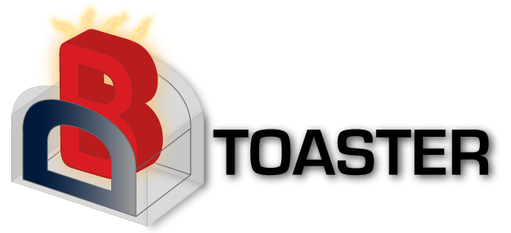

— almost unknown to anyone;
— developed by one person;
— abandoned.
«EventQL is a distributed, column-oriented database built for large-scale event collection and analytics. It runs super-fast SQL and JavaScript queries».
Open-source since July 26, 2016
https://github.com/eventql/eventql (963 stars)
Written in C++11
Uses ZooKeeper for coordination
No dependencies besides ZooKeeper
MPP, Distributed, Column-Oriented...
Scales to petabytes. Fast range scans...
Almost complete SQL 2009 support.
Real-time Inserts & Updates.
Automatic distributed partitioning.
ChartSQL.
Last commit May 4, 2017.
Website http://eventql.io/ doesn't load.
Latest issue on GitHub asking about development — no response.
Belongs to DeepCortex company, Berlin.
One C++ developer, one frontend developer.
Active development since 2014.
AGPL license.
Less than a year in open-source, product abandoned.
— did the developer move to another company?
— did the company's priorities change?
— did life circumstances change?
— was open-sourcing caused by
lack of development within the company?
— simply got bored?
ChartSQL inspired the implementation of chart functionality in the Tabix interface for ClickHouse.
Interesting articles about system architecture in the blog
(can be read via web.archive.org or in the source tree).
Well-organized code — there's much to learn from.
Originally — ålenkå.
GPU database engine
https://github.com/antonmks/Alenka (1103 stars)
Written in CUDA, C++
One developer — Anton Starobinskiy (antonmks), Minsk
Apache 2.0 license
JDBC driver from Technica Corporation exists
Open-source since January 26, 2012
Last commit — November 2016
Personal project
System is a research prototype
Poorly extensible codebase
Mark Litwintschik tests:
http://tech.marksblogg.com/alenka-open-source-gpu-database.html
Why was it abandoned?
— the developer moved to nVidia.
Increased interest in GPU database technologies
Usable for research purposes
See also:
MapD:
https://github.com/mapd/ (Apache 2.0)
Open-source since May 8, 2017
https://www.mapd.com
PGStorm: https://github.com/heterodb/pg-strom (GPLv2)
BrytlytDB: https://www.brytlyt.com/ (closed source)
Kinetica DB:
https://www.kinetica.com/ (closed source)
Polymatica BI:
https://www.polymatica.ru/ (closed source)
FPGA. Example: Kickfire (company closed)
DAX instruction set (SQL in Silicon) in SPARC processors
(decompression + filtering)
Offload filtering to SSD level:
https://www.vldb.org/pvldb/vol9/p924-jo.pdf
«Analytical database for unsorted data»
https://github.com/viyadb/viyadb (Apache 2.0)
Written in C++17
Open-source since February 28, 2018
One developer — Michael Spector
Good launch preparation:
https://habrahabr.ru/post/350154/
Medium, LinkedIn, Hacker News...
Data entirely in RAM
Works with aggregated data
Weak SQL support (initially — queries in JSON)
C++ code is dynamically generated for query processing
Has cluster support, uses Consul for coordination
Based on contradictory assumptions:
«Only in-memory database can handle random writes accompanied with analytical queries, which require full table scans».
— https://medium.com/viyadb/analyzing-mobile-users-activity-with-viyadb-c88a02104269
Only in-memory DB allows continuous event insertion arriving in a stream unordered by time, while simultaneously processing analytical queries.
???
Is the system worth studying?
Example: C++ code generation
... but, see also:
DBToaster:
https://dbtoaster.github.io/ (Apache 2.0)
research project from EPFL (Switzerland)
C++ code generation vs. LLVM
Example: MemSQL switched from C++ to LLVM
in version 5 (March 30, 2016)
http://blog.memsql.com/memsql-5-ships/
Example: Cloudera Impala initially uses LLVM for code generation
Example: ClickHouse uses a rudimentary C++ code generation mechanism, but mainly relies on vectorized query processing.
«LucidDB is the first and only open-source RDBMS purpose-built entirely for data warehousing and business intelligence».
https://github.com/LucidDB (Apache 2.0, previously GPLv2)
Company: The Eigenbase Project (USA), non-profit organization
+ LucidEra company (BI provider)
Java, some C++
Last commit 6 years ago
What was it like 6 years ago?
Well-extensible codebase
More than one developer
Good documentation (http://www.eigenbase.org/ doesn't load, parts available on web.archive.org)
Rich functionality, good SQL support
Why did it die?
— lack of funding;
— no enthusiasts;
— LucidEra company closed;
Apache Calcite — «frontend» for SQL DBMS
(parsing, query analysis, optimization,
query plan, JDBC)
Used in Hive, Drill, Kylin, Samza, Storm, MapD...
Initially closed-source
Developed by Calpont company
October 2013 — open-source release, GPL 2.0
October 2014 — Calpont bankruptcy
https://github.com/infinidb/infinidb
Last commit — September 2014
MariaDB ColumnStore
https://github.com/mariadb-corporation/mariadb-columnstore-server

«Extreme Scale Transaction Processing»
http://www.infinisql.org/ (website available)
https://github.com/infinisql/infinisql (GPL 3.0, was AGPL)
Written in C++
Two developers
Open-source — November 25, 2013
Last commit — January 12, 2014
OLTP, in-memory
Has clustering. No fault tolerance.
Basic SQL support
Personal project.
Unfinished, abandoned.
Why was it abandoned?
— open-sourcing was motivated by hope to attract enthusiasts to the project, which is doomed to fail;
— database development is difficult, time-consuming and expensive.
«The open-source database for the realtime web»
Document-oriented (JSON)
Properly implemented replication (RAFT) and sharding
Supports subscription to realtime updates
Convenient query language ReQL and client libraries
Written in C++
Cool website: https://rethinkdb.com/
https://github.com/rethinkdb/rethinkdb/
Developed since 2009
Decent number of developers
Excellent documentation
Active community
20,938 stars on GitHub!
2009 — company founding, investments
Difficulties with positioning,
lack of commercial success.
October 2016 — company closure,
development team moves to Stripe
February 2017 — thanks to donations, RethinkDB rights were purchased and transferred to The Linux Foundation.
License changed from AGPL to Apache 2.
2017-2018 — development continues, but much more slowly.
Story about mistakes from the company founder:
http://www.defmacro.org/2017/01/18/why-rethinkdb-failed.html
«Native XML Database System»
Developed by ISP RAS
https://github.com/sedna/sedna (Apache 2.0)
Last commit — 2013
GOODS, POST++, ShMem, FastDB, GigaBASE, MiniDB, PERST, DyBASE...
IMCS (In-Memory Columnar Store)
https://github.com/knizhnik/imcs
PostgreSQL extension for storing
and processing time series
Use-case — stock market data.
Weak integration with SQL (essentially, own language inside Postgres).
Personal project: changing circumstances, loss of interest, underestimation of effort required.
Startup: no niche, difficulty positioning in the market, loss of funding.
Side product of a company:
— departure of key developers;
— cessation of open-source development support;
— open-sourcing due to bankruptcy;
— open-sourcing by misunderstanding.
Institution: research project, research completed.
1. Scaling development.
2. Clear positioning.
3. Focus on specific niche.
4. Reliable support from parent company.
5. Non-restrictive license.
6. Advantages should come from fundamental reasons.
7. Support for community development.